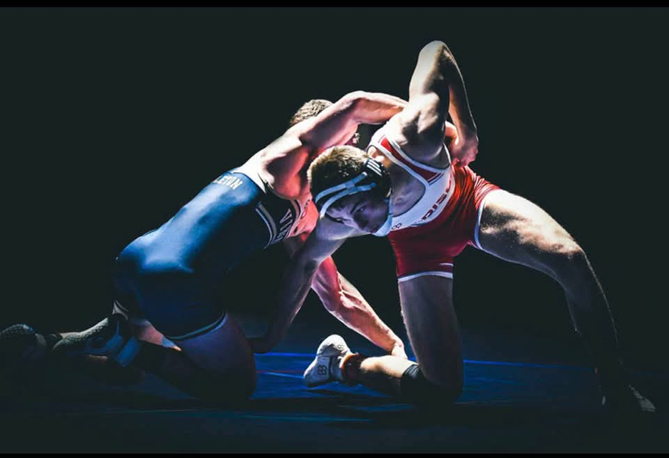
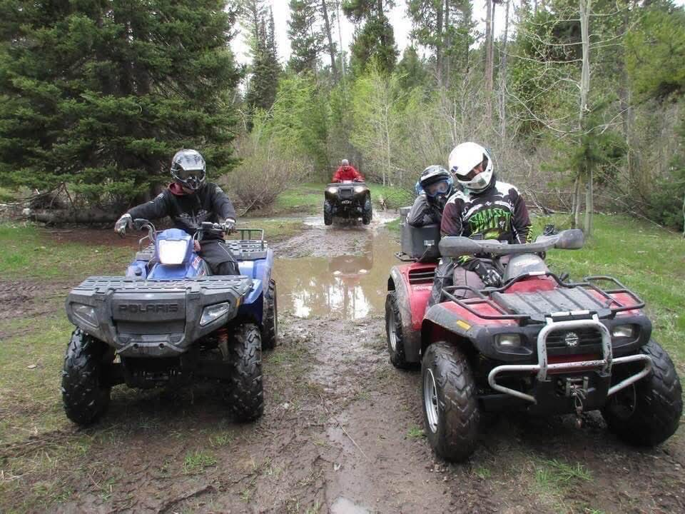
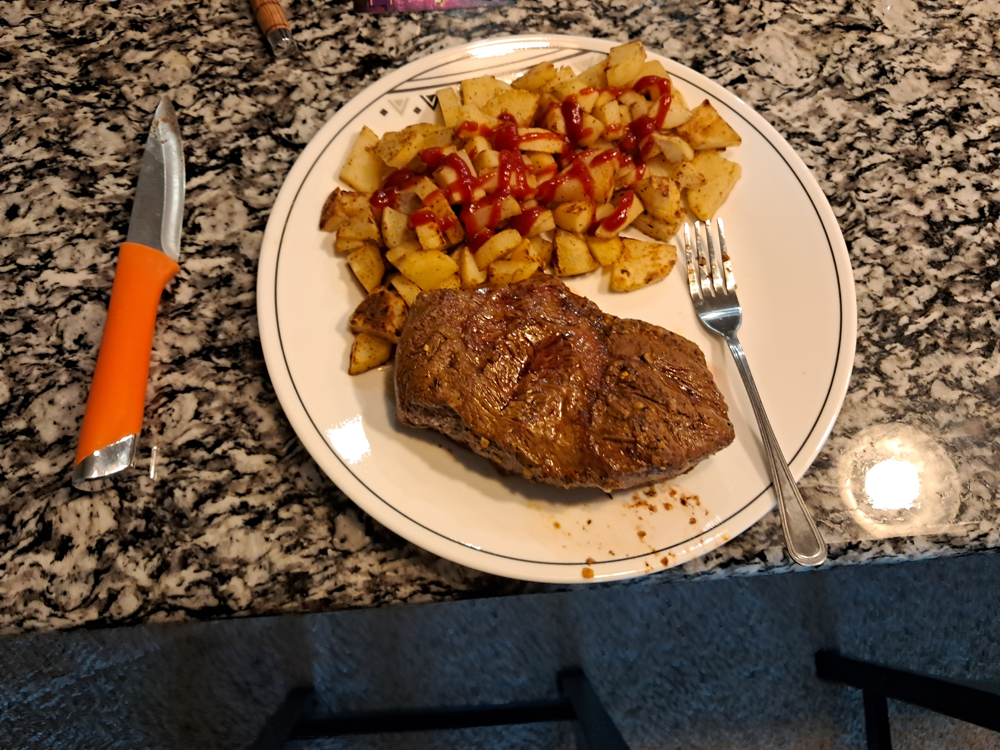

Wrestling
I have been wrestling pretty much my whole life. I started when I was in 1st grade and wrestled all the way through high school. What draws me in the most is I determine how much competetion time I get. I have work hard in it and had many awesome opportunities. I had the opportunity to be on the Idaho national team when we one our first national championship. I am hoping to continue wrestling in college. I currently coach the club program for my high school in Rexburg, ID.
Riding & Camping
My family loves to be outside! We love going camping and riding atvs in the mountains.
Cooking
I love to cook! I got especially good at cooking on my mission. I started cook a lot. I loved to cook steak, salmon and chicken and potatoes.
Music
I love music! In particular, I love to sing. I am always singing; in the car, doing homework, hanging out with friends. In formal settings, I love singing barbershop and latin pieces. In general, I love 80's music like Journey, Def, Leppard, Outfield REO Speedwagon, Foreinger, and many more. I also like indie rock and modern music with bands like the Wallows, Imagine Dragons, Blink-182, and many more.